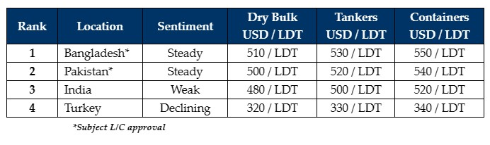

inWeekly Demolition Reports11/03/2024

Even though the Indian sub-continent ship recycling markets are being painfully introduced to a merciful collectionof small(er) LDT vessels of late – the sales of which are being confirmed via the weekly port reports of both Bangladesh and a (fiery) Pakistan – it has remained an utterly sleepy & tranquilized week across the major ship recycling markets; including Turkey, which suffered further declines of its own this week. As such, given the near-total lack of market offerings, virtually no deals have been concluded (as evident from the weekly dithering traffic patterns at the various waterfronts of late), and a surprisingly lethargic India that remains puzzlingly peculiar at the bidding tables, 2024 certainly has put the squeeze on the global ship-recycling sector.
Dry bulk charter rates have been pushing on by the week as Ship Owners monetize the most from this sector. Containers and tankers too remain oddly off the recycling buffet and this in turn is driving the ongoing dearth of viable candidates into overdrive, as chartering rates continue to hold through a time that many had been expecting them to falter with the turn of the year. Global economies certainly have the trigger-haply Houthis to thank for the aggression in the Red Sea lanes as reportedly, another vessel was attacked & subsequently sank this week.
Ship Recyclers have therefore been left famished, trying to make it through this most recent of prolonged tonnage famines, as crumbs of small LDT units have seemingly taken the limelight of late, including several poor(er) condition Far East built / owned / operated units that remain less desired, in light of their above-average weight-loss due to the poorer condition of their steel, the number of removals from the vessel by the Owners and the Crew, permanent ballast onboard, and corroded ballast tank issues, just to name a few.
On the ship-recycling markets front, Bangladesh continues to lead the way for another week, with Pakistan barely an arms-length behind. Yet, there have been a few indications that Gadani levels may be on the down in the coming weeks as local demand & L/C limits have been satisfied for the time being. India also continues to struggle as Alang Recyclers endure this prolonged downturn in their market and suffer through loss making deals just to acquire tonnage, all while Chinese steel is being offloaded despite strict anti-dumping measures being set in place. As such, it was a mixed overall week, with perhaps some trouble brewing on the horizon for the Indian & Turkish markets as their struggles show few signs of dissolving any time soon, and Bangladesh & Pakistan fail to get acquire any meaningful tonnage, despite demand & L/C limits being firm.
For week 10 of 2024, GMS demo rankings / pricing for the week are as below.

📄 Download PDF: Ship-recycling-market-insight-week-10-2024-Tonnage_Tranquilized.pdf
Source: GMS,Inc. ,https://www.gmsinc.net/gms_new/index.php/web